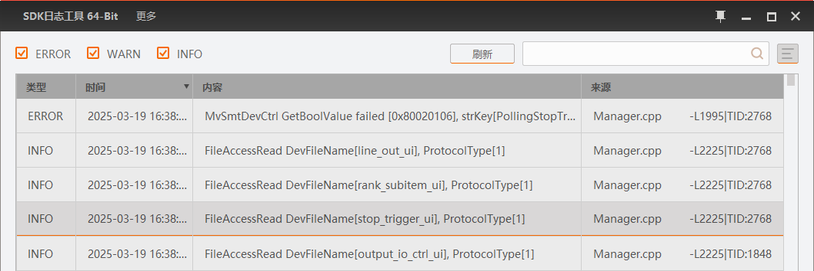

SDK日志
SDK日志主要用于查看SDK运行时产生的日志信息。
一般在使用IDMVS遇到问题时，可尝试通过SDK日志查看问题原因。
说明
SDK日志仅支持64位操作系统。
每条SDK日志信息均包含类型、时间、内容、来源，如下图所示。通过工具右上角的可设置SDK日志信息显示的内容。
 可设置SDK日志信息显示的内容。
可设置SDK日志信息显示的内容。
图 1 SDK日志
单击SDK日志列表中的时间表头，可将SDK日志以时间方式降序或升序排列，默认为降序。
您可通过鼠标和Ctrl键或Shift键选中多条SDK日志。
说明
操作方法和Windows系统中选择多个文件的方法相同，此处不再赘述。
选中SDK日志信息后，右键单击可进行以下操作。
- 导出所有日志
-
可将所有SDK日志以txt格式导出。
- 导出所选日志
-
可将选中的SDK日志以txt格式导出。
- 复制所有日志
-
可复制所有SDK日志，再拷贝到其他文件中，例如txt或Word等。
- 复制所选日志
-
可复制选中的SDK日志，再拷贝到其他文件中，例如txt或Word等。
- 清空日志
-
可将当前所有SDK日志清空。
此外，该工具还支持以下功能。
分享